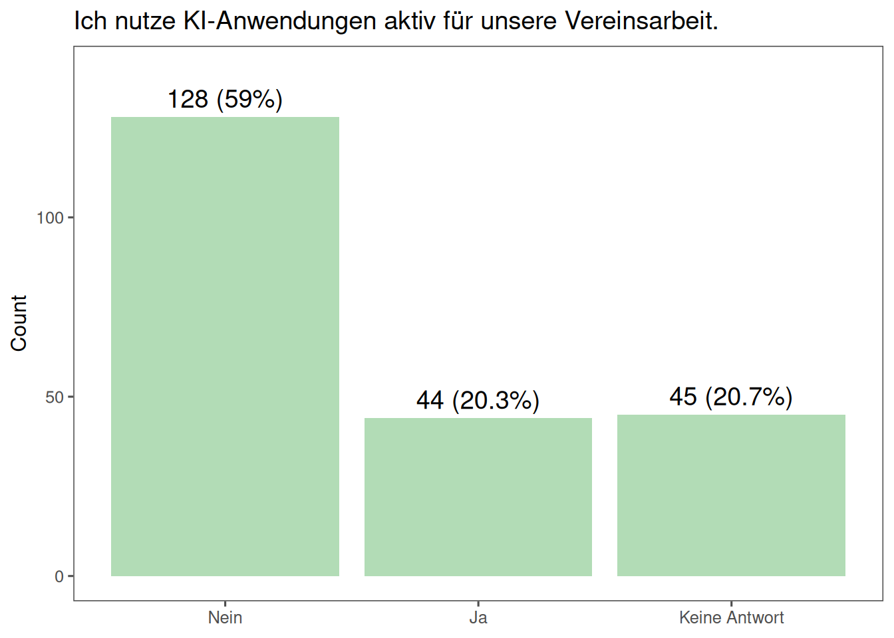
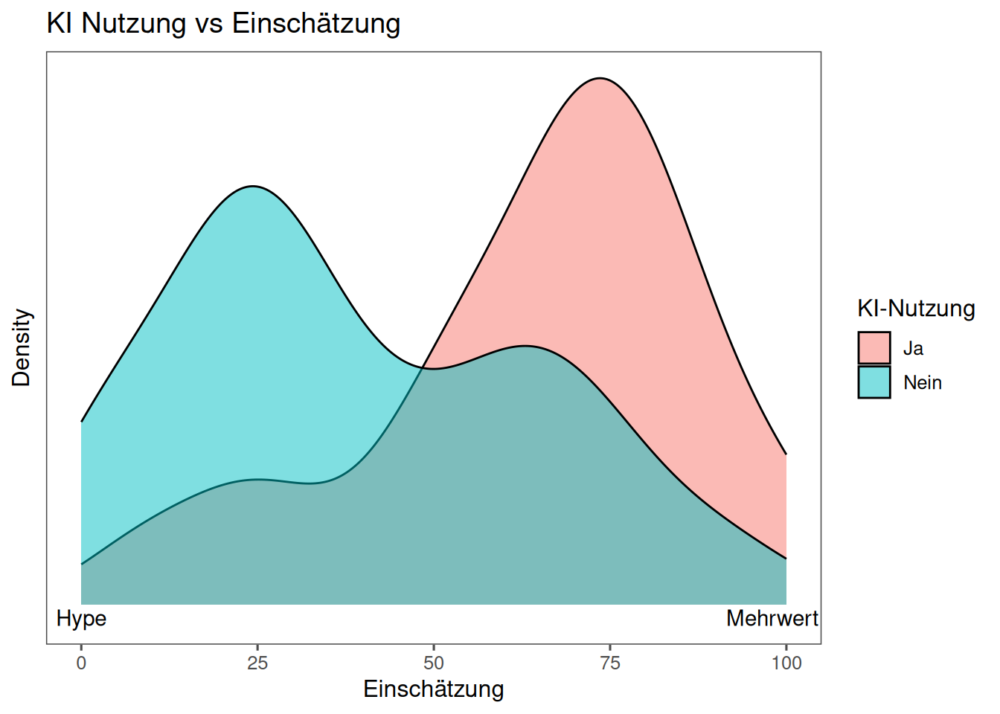
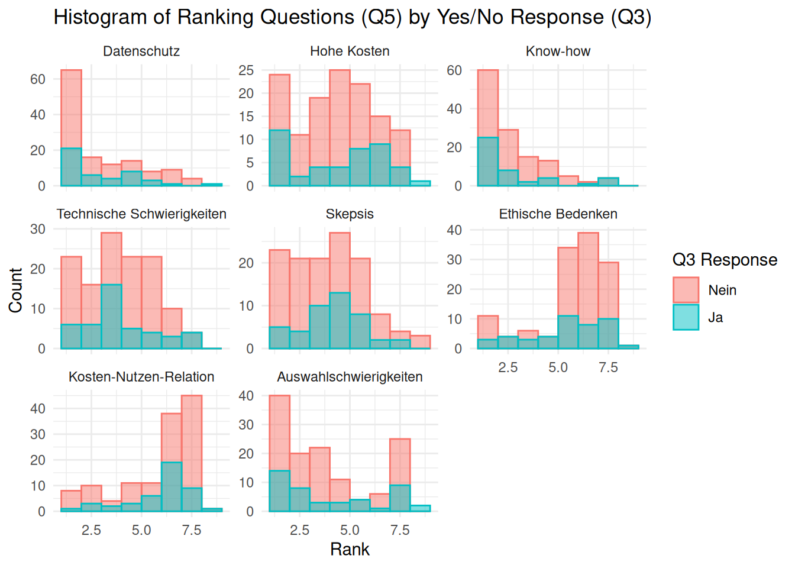
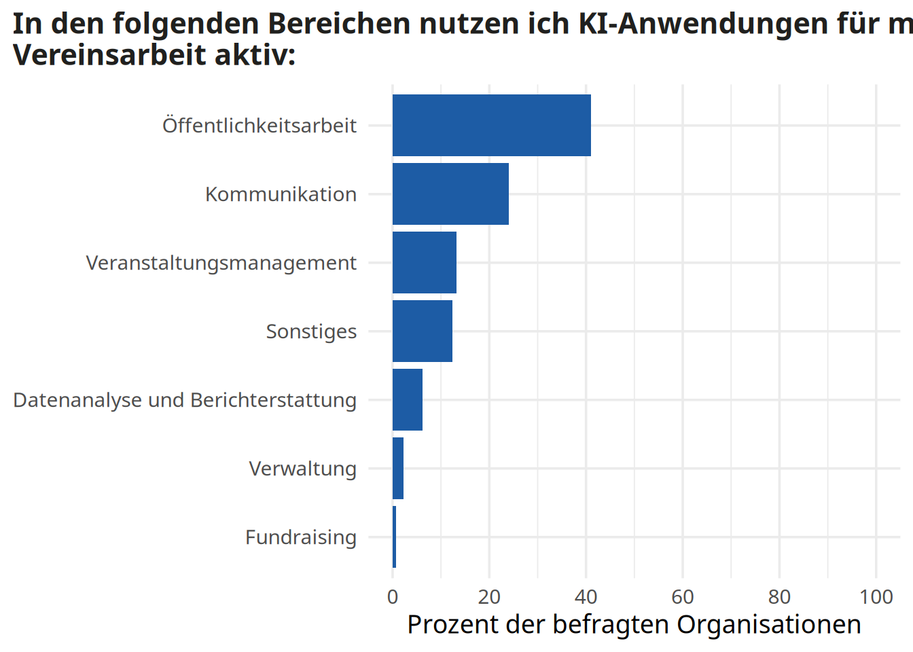
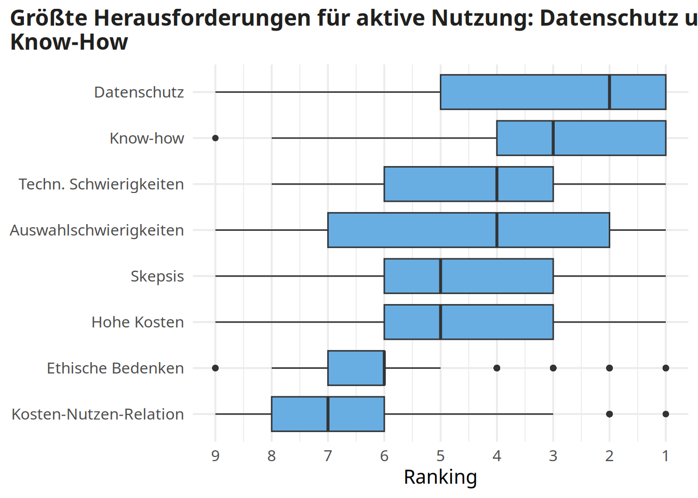
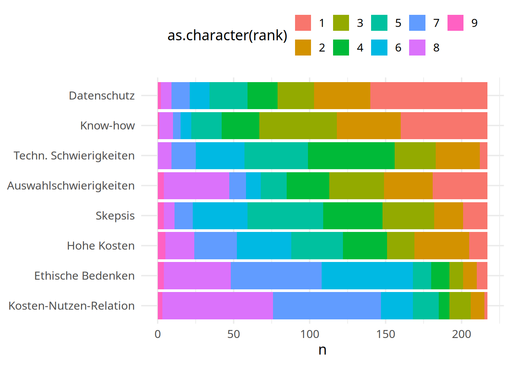
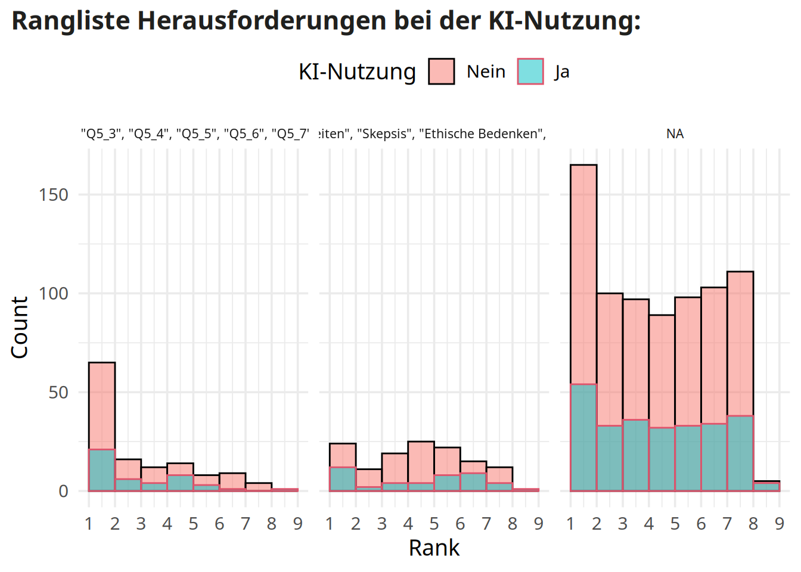

Total respondents: 217 dv_ai_survey
Loading required package: sysfontsLoading required package: showtextdbKI-Nutzung


KI ermöglicht…
question label
1 Q8_1 Effizienzsteigerung
2 Q8_2 Zeitersparnis
3 Q8_3 Bessere Kommunikation und Erreichbarkeit für Mitglieder
4 Q8_4 Mehr Transparenz in der Vereinsarbeit
5 Q8_5 Erleichterung der Entscheidungsfindung durch Datenanalyse
6 Q8_6 Professionalisierung der Vereinsarbeit
7 Q8_7 Sonstiges und zwar
Anwendungen von KI

Herausforderungen
Die wichtigsten drei Herausforderungen

`summarise()` has grouped output by 'label', 'med_rank'. You can override using
the `.groups` argument.
| label | mittelwert_rank | median_rank | quantil_25 | quantil_75 | interquartilsabstand |
|---|---|---|---|---|---|
| Auswahlschwierigkeiten | 4.25 | 4 | 2 | 7 | 5 |
| Datenschutz | 3.06 | 2 | 1 | 5 | 4 |
| Ethische Bedenken | 6.12 | 6 | 6 | 7 | 1 |
| Hohe Kosten | 4.76 | 5 | 3 | 6 | 3 |
| Know-how | 3.00 | 3 | 1 | 4 | 3 |
| Kosten-Nutzen-Relation | 6.49 | 7 | 6 | 8 | 2 |
| Skepsis | 4.40 | 5 | 3 | 6 | 3 |
| Techn. Schwierigkeiten | 4.41 | 4 | 3 | 6 | 3 |

Offene Fragen
Welche KI-Anwendung empfiehlst du dringend anderen Vereinen und wieso?
Die Top 3 dringenden Empfehlungen wurden folgendermaßen begründet:
| App | Zusammenfassung | Anzahl |
|---|---|---|
| ChatGPT | ChatGPT wird aufgrund seiner Bedienbarkeit, seiner Schnelligkeit, seiner Kostenlosigkeit und seiner Vielseitigkeit empfohlen. | 19 |
| Keine Empfehlung | Keine klare Empfehlung, da die Wahl einer KI-Anwendung von den spezifischen Bedürfnissen des Vereins abhängt. | 6 |
| Canva | Canva wird aufgrund seiner Fähigkeit, Charities zu unterstützen, empfohlen, da es die Integration von KI-Funktionen und die einfache Betreuung von Social-Media-Kanälen bietet. | 5 |
Wenn du einem Entwickler von KI etwas mit auf den Weg geben könntest, was wäre es? Was denkst du, sollte man bei der Entwicklung von KI-Anwendungen besonders berücksichtigen?
Es wurden drei Themen in den Antworten identifiziert:
| Name | Beschreibung | Anzahl |
|---|---|---|
| KI verantwortungsbewusst entwickeln | Die Befragten betonen, dass KI-Entwickler verantwortungsbewusst vorgehen müssen, um sicherzustellen, dass die Anwendungen ethisch vertretbar sind und die Rechte der Menschen schützen. Sie fordern Transparenz in der KI-Entwicklung, einschließlich der Verwendung von Daten und der Vermeidung von Missbrauch. Gleichzeitig sehen sie die Vorteile von KI bei der Arbeit und in der Gesellschaft, solange diese auf eine verantwortungsbewusste und nachvollziehbare Weise eingesetzt werden. Die Befragten betonen auch, dass KI nicht die Kontrolle übernehmen darf und dass die Anwender immer im Mittelpunkt stehen sollten. Dieses Eintreten für verantwortungsbewusstes Vorgehen bei der KI-Entwicklung und die Betonung der Bedeutung von Transparenz und Menschenrechten spiegelt ein Engagement für ethische und nachhaltige Technologieentwicklung wider. | 40 |
| Einfache Bedienung | Die Befragten betonen die Bedeutung von Usability und Einfachheit in der Entwicklung von KI-Anwendungen. Sie möchten, dass Anwendungen so einfach und verständlich wie möglich sind, damit auch Nicht-Profis sie nutzen können. Insbesondere sollten Anwendungen älteren Menschen zugänglich sein, um ihre Scheu gegenüber KI zu überwinden. Die Befragten betonen auch, dass die Bedienung nicht zu kompliziert sein sollte und dass Lösungen einfach zu implementieren sein sollten, um rasch Mehrwert zu bieten. Dies erfordert, dass die Entwickler die Bedürfnisse ihrer Zielgruppe verstehen und entsprechende Anwendungen entwickeln, die leicht zu bedienen sind und gleichzeitig effektiv sind. | 21 |
| Transparenz und Schutz | Die Clusteranalyse ergibt, dass die Befragten die Bedeutung von Transparenz in der Entwicklung von KI-Anwendungen betonen. Sie fordern Transparenz in der Datenverarbeitung, in der Entscheidungsfindung und in der Verwendung von Quellen. Zudem betonen sie die Bedeutung von Schutz, insbesondere des Kinderschutzes und der Vermeidung von Fakenews. Die Analyse zeigt auch, dass die Befragten die Vermeidung von Fehlinformationen und die Gewährleistung von Verständlichkeit für Benutzer als wichtige Aspekte der KI-Entwicklung betrachten. | 18 |